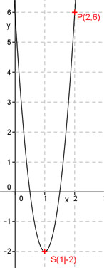

Aufgabe 54 Bestimmen Sie die Funktionsgleichung der Parabel deren Scheitelpunkt in (1|-2) liegt und die durch den Punkt (2|6) geht. Scheitelpunktform: y = a(x – xS)2 + yS Eingesetzt: xS = 1, yS = -2, x = 2 und y = 6 6 = a * (2 – 1)2 - 2 6 = a – 2 |+2 a = 8 y = 8(x – 1)2 - 2 